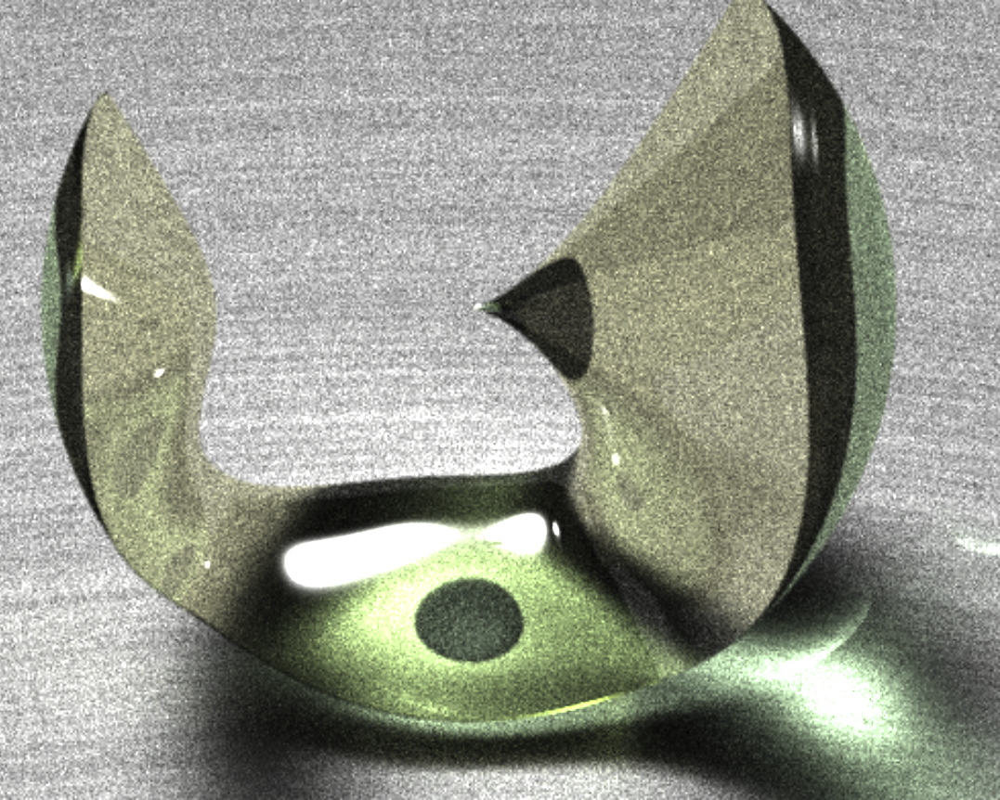

Rapid creation of GPU accelerated mathematical content
Aaron Montag
Technical University of Munich, Germany
Montevideo, December 6

Ingredients of modern mathematics communication
- real-time visualizations
- GPU, “edutainment”
- interactivity
- more than a movie
- adaption to the audience
- modern devices, web
- versatility in content
- easy creation
Technical background
Tasks that initially were done on the CPU can now be accelerated on the GPU.
However: The programming concepts in conventional programming are quite difficult:
- Shaders/kernels are in separate language (GLSL, CUDA C…).
- The number of lines of code drastically increases.
- GPU specific code often causes platform dependency.
\Rightarrow additional development effort is enormous and contents are hard to distribute.
Our answer: CindyGL
- a plug-in for
CindyJS, aCinderellacompatible framework for the web.
Brings easy shader programming via
WebGLinto dynamic geometry software.WebGL: a JavaScript API for interactive 3D and 2D graphics without the use of plug-ins.
- CindyGL translates a subset of CindyScript to GLSL \rightarrow One programming language for both the CPU and GPU.
- Aim: Making
WebGLeasy for mathematics communicators.
A small example
For each pixel with coordinates x and y a grayscale-value is computed.
Interactivity + Animation + Colors
seconds() returns the exact time \rightarrow enables animations.
If colorplot outputs a three component-vector, the color is obtained by additive mixing of red, green and blue.
Deformation of images
For each pixel we look up a color in a texture at the given coordinates.
Deformation of images (complex)
Also access to the webcam is possible
Raycasting
Aim: render the surface x^2+y^2+z^2 - 1 = 0
The intersection of the ray behind each pixel with the surface is computed.
The stereographic projection
Editing spherical images
The (spherical) Droste effect
Raycasting (advanced)
How does it work?
- Observation
- F: \mathbb{R}^3\to \mathbb{R} evaluated along ray is a univariate polynomial p.
For each pixel:
- Evaluate p at Chebyshev nodes.
- Obtain Bernstein form of p through linear transformation.
- p has a root \Rightarrow “Bézier path” has a root.
- Use recursion to isolate roots of p.


Merging algebraic surfaces
Further applications of CindyGL
 Feedbackloops
Feedbackloops Volumetric Rendering
Volumetric Rendering FFT
FFT Complex Analysis
Complex Analysis Analytic Landscapes
Analytic Landscapes Partial Differential Equations
Partial Differential Equations Fluid Simulation
Fluid Simulation Video-Deformations with Henry Segerman
Video-Deformations with Henry Segerman N-body Simulation
N-body Simulation Monte Carlo Raytracing
Monte Carlo RaytracingThank you!
More information on cindyjs.org.
Tutorial for CindyGL: cindyjs.org/docs/cindygltutorial/.
Applications in app: interactive.app.tum.de.
References
Images: Andreas Heddergott and pexel. (Stussak 2009) (Montag and Richter-Gebert 2018) (Sagraloff and Mehlhorn 2016) (Gagern et al. 2016) (Montag and Richter-Gebert 2016) (Schleimer and Segerman 2016)
Gagern, Martin von, Ulrich Kortenkamp, Jürgen Richter-Gebert, and Michael Strobel. 2016. “CindyJS.” In International Congress on Mathematical Software, 319–26. Springer.
Montag, Aaron, and Jürgen Richter-Gebert. 2016. “CindyGL: Authoring GPU-Based Interactive Mathematical Content.” In International Congress on Mathematical Software, 359–65. Springer.
Montag, Aaron, and Jürgen Richter-Gebert. 2018. “Bringing Together Dynamic Geometry Software and the Graphics Processing Unit.” http://arxiv.org/abs/1808.04579.
Sagraloff, Michael, and Kurt Mehlhorn. 2016. “Computing Real Roots of Real Polynomials.” J. Symb. Comput. 73: 46–86.
Schleimer, Saul, and Henry Segerman. 2016. “Squares That Look Round: Transforming Spherical Images.” arXiv Preprint arXiv:1605.01396.
Stussak, C. 2009. “RealSurf-a GPU-Based Realtime Ray Caster for Algebraic Surfaces.” In Proc. Spring Conf. Computer Graphics.